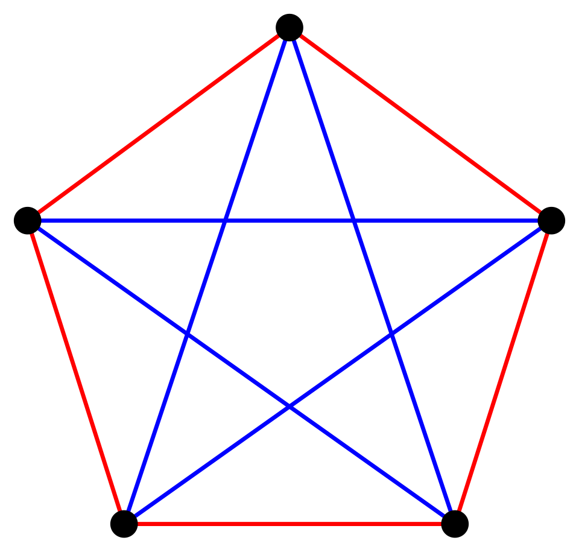

Enumerative combinatorics asks a deceptively simple question: given a finite set described by some rule, how many elements does it have? The elementary answer — multiply independent choices, divide out the order you do not care about — is where the subject begins, not where it ends. Almost every interesting counting problem resists a closed formula, and the real work consists of finding the right structure: a bijection that converts one family into another, an algebraic object (a generating function, a group action, an inverse matrix) that encodes the whole sequence at once, or an asymptotic estimate when exact answers are out of reach.
This course treats combinatorics as a graduate text would. We assume fluency with permutations and combinations, mathematical induction, basic linear algebra, power series, and elementary group theory. We begin with the twelvefold way, Rota's systematic classification of distribution problems, and with the algebra of binomial and multinomial coefficients. We then develop the three great general methods of enumeration: inclusion–exclusion (and its generalization, Möbius inversion), linear recurrences, and generating functions, both ordinary and exponential. These tools are applied to the classical number families — Stirling, Bell, partition and Catalan numbers — whose theory culminates in results such as Euler's pentagonal number theorem and the Hardy–Ramanujan asymptotic formula.
The second half of the course turns to existence and structure. Burnside's lemma and Pólya's theorem count objects up to symmetry. The pigeonhole principle leads to Ramsey theory, one of the deepest parts of modern combinatorics, where the exact value of R(5, 5) is still unknown. We prove the foundational theorems of graph theory that every combinatorialist uses — Euler's theorem, Hall's marriage theorem and Cayley's formula, together with the statement of König's theorem — and we close with the probabilistic method of Erdős, which proves that objects exist without ever constructing them.
In this course, you will:
- 1.Classify distribution problems by the twelvefold way and solve each case
- 2.Prove binomial and multinomial identities by double counting, and use Lucas's and Kummer's theorems
- 3.Apply inclusion–exclusion and Möbius inversion on partially ordered sets
- 4.Solve linear recurrences with constant coefficients by the characteristic polynomial
- 5.Use ordinary and exponential generating functions as formal power series, including the exponential formula and Lagrange inversion
- 6.Master the Stirling numbers of both kinds, the Bell numbers and Dobinski's formula
- 7.Study integer partitions, Euler's pentagonal number theorem and the asymptotics of p(n)
- 8.Derive the Catalan numbers by the reflection principle and the cycle lemma
- 9.Count orbits under group actions with Burnside's lemma and the Pólya enumeration theorem
- 10.Prove Ramsey-type theorems and the classical bounds on Ramsey numbers
- 11.Prove the theorems of Euler, Hall and Cayley, and state König's theorem
- 12.Use the probabilistic method: expectation, alteration and the Lovász local lemma
Notation used throughout: [n] = {1, 2, …, n}; (x)ₖ = x(x − 1)⋯(x − k + 1) is the falling factorial and x⁽ᵏ⁾ = x(x + 1)⋯(x + k − 1) the rising factorial; C(n, k) is the binomial coefficient; [xⁿ] F(x) denotes the coefficient of xⁿ in a power series F(x); |A| is the cardinality of a finite set A.
Figures


Contents
The Twelvefold Way Lesson 2
Binomial and Multinomial Coefficients Lesson 3
Inclusion–Exclusion and Möbius Inversion Lesson 4
Linear Recurrence Relations Lesson 5
Ordinary Generating Functions Lesson 6
Exponential Generating Functions and the Exponential Formula Lesson 7
Stirling Numbers and Bell Numbers Lesson 8
Integer Partitions Lesson 9
Catalan Numbers and Lattice Paths Lesson 10
Burnside's Lemma and Pólya Enumeration Lesson 11
The Pigeonhole Principle and Ramsey Theory Lesson 12
Graph Theory Essentials Lesson 13
The Probabilistic Method Problem Set
60 problems Assessment
Randomly generated questions
Image sources
- Figure 1 · Image-Koenigsberg, Map by Merian-Erben 1652. By Merian-Erben. Public domain. From Wikimedia Commons: https://commons.wikimedia.org/wiki/File:Image-Koenigsberg,_Map_by_Merian-Erben_1652.jpg
- Figure 2 · RamseyTheory K5 no mono K3. By Richtom80. CC BY-SA 3.0. From Wikimedia Commons: https://commons.wikimedia.org/wiki/File:RamseyTheory_K5_no_mono_K3.svg